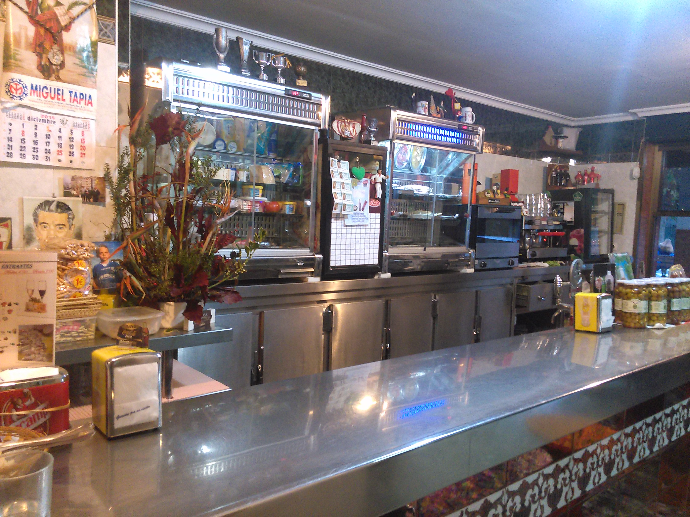
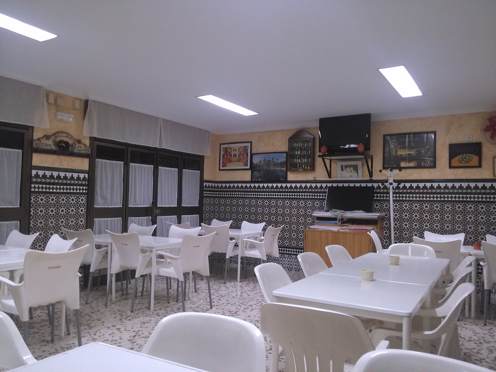

Menú
Redes sociales
Contacto
Acerca de nosotros
Login
Salon
Salon bien iluminado y decorado.

Barra
Amplia barra de estilo antiguo.

Salon
Salon al estilo de patio andaluz.
Anterior
Siguiente
© 2015 BAR MERI España. Todos los derechos reservados.